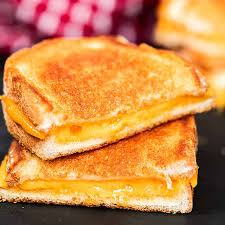

"Grilled Cheese"

Grilled cheese is the Beautiful Creation of Crispy Bread and Gooey Cheese that melts in your mouth. Today I'll show you how to make it.
Ingredients
- 2 slices of your bread of choice
- Margarine Butter
- A slice of your cheese of choice
Instructions
- First Butter one side of each slice of bread. Take a pan, put on stovetop on medium heat. Put one slice butter side down into the pan.
- Next add your slice of cheese and your second slice butter side up
- Wait until the bottom is a nice golden brown and flip till both sides are evenly cooked and cheese is nice and melted
- Dish out and enjoy!